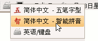
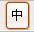
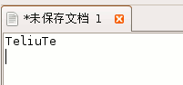
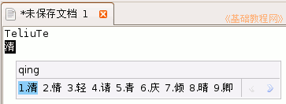
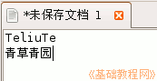
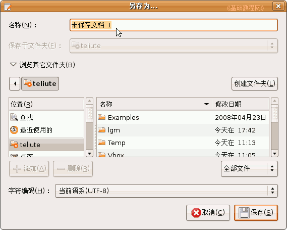
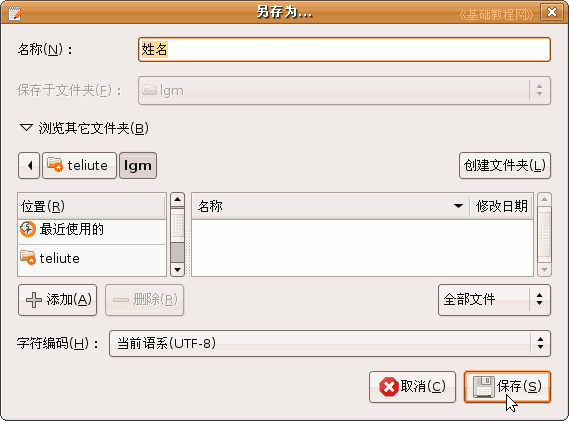
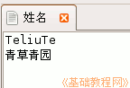

，选择“简体中文－智能拼音”输入法，下边出来一个状态条；
，选择“简体中文－智能拼音”输入法，下边出来一个状态条；电脑操作基础
作者：TeliuTe 来源：基础教程网
五、汉字输入 返回目录 下一课前面我们学习的是英文的输入，而常见的是汉字，怎样用键盘来输入汉字呢？下面通过智能拼音输入法来学习；
1、安装输入法
1）输入法有专门的程序，我们一般用scim输入法，图标在上面板的右边，是一个小键盘图标，
2）正确设置汉语后，点击这个小键盘图标，就可以看到中文输入法；

3）当切换到中文输入法时，屏幕右下角会有一个输入法状态条，当点击输入法列表里的“英语/键盘”，就可以回到英文输入状态；
4）状态条上的各个文字和图标按钮，都可以点击，点一下切换，再点一下返回，
中间的“中”点击后，可以暂时换到英文状态，也可以按键盘上的shift键，
旁边的月亮图标，点一下变成圆月亮，这时输入全角字符(大一些)，
2、输入汉字
1）点上面板的“应用程序”菜单，选择“附件－文本编辑器”，出来一个文本窗口，里面有一个竖线一闪一闪，这是光标插入点；
2）输入自己姓名的拼音字母，按回车键到下一行；

3）点击上面板的小键盘图标，选择“简体中文－智能拼音”输入法，下边出来一个状态条；
4）继续输入自己姓名拼音，这时拼音会显示在一个长条中，里面也有许多汉字，
按汉字前面的数字可以输入汉字，第一个汉字可以按空格键输入，有错误拼音就按退格键删除；

5）如果数完拼音后，在候选窗口里没有姓名里的汉字，就按大于号键往后翻页，也可以按加号键；
6）可以一个字一个字输入，也可以一次输入一个词语，用词语速度输入要快些，拼音可以输入完整的，也可以只输入第一个字母；

3、保存文件
1）把姓名输入好以后，点菜单“文件－保存”命令，出来一个保存对话框，
进行保存操作的时候，按照从上到下的顺序一步一步来；

2）在上边的文件名中，输入“姓名”，在中间找到自己的文件夹，点两下左键双击打开，然后点保存即可，
也可以点一下自己的文件夹，点两下“保存”，操作比较灵活；

3）检查一下上边的文件名和保存位置都正确以后，点右下角的“保存”按钮，完成保存；

本节学习了汉字输入的基本知识，如果你成功地完成了练习，请继续学习下一课内容；本教程由86团学校TeliuTe制作|著作权所有，商业用途请与作者联系
基础教程网：http://teliute.org/
美丽的校园……
转载和引用本站内容，请保留版权信息和本站链接。